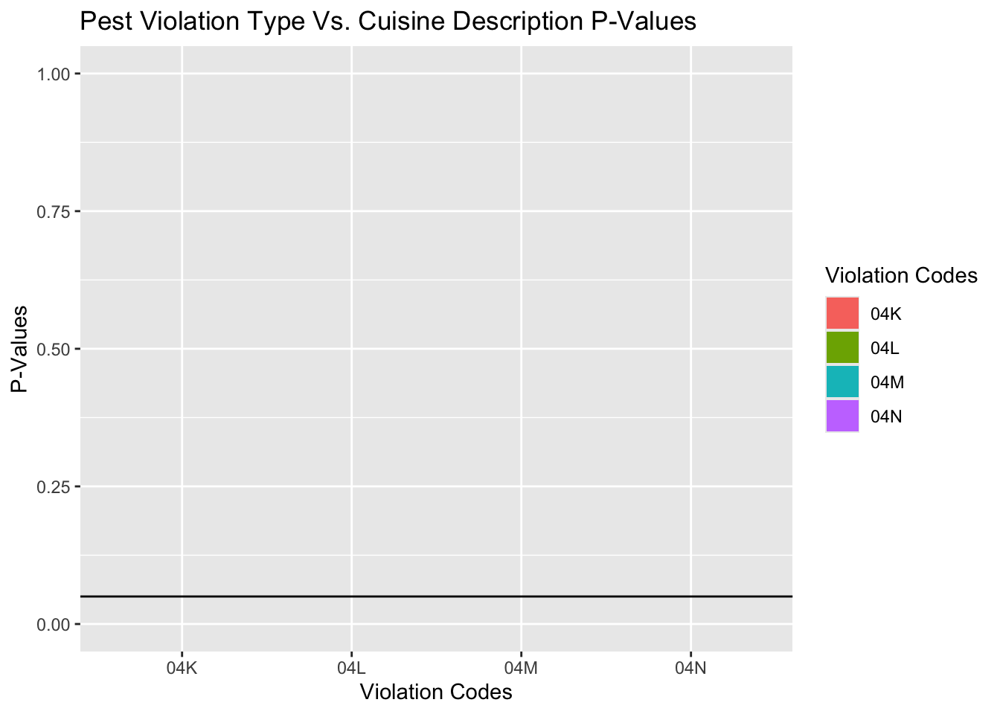

A Data-Informed Guide to Identifying Pest Violations in Manhattan
Abstract
Manhattan is a borough of New York City, the most populous city in North America, with 1.7 million people living there and an additional 2.3 million people commuting for work. With a population density of 17,000 people per mi² during weekdays, public health is paramount. This study aims to identify key factors contributing to pest infestations in Manhattan’s restaurants, focusing on correlations between specific violations and restaurant characteristics to form a data-informed guide. It is built using data from a 2023 subset of the Department of Health and Mental Hygiene (DOHMH) New York City Annual Restaurant Inspection Results dataset and methods including statistical tests and machine learning models such as K-Nearest Neighbor Models, Chi-Squared Tests, Fisher’s Tests, ANOVA Tests, and Multinomial Logistic Regression. This study suggests that certain types of restaurants and areas are more prone to pest issues by identifying correlations between Cuisine, Zipcode, and Pest Violation Codes (Rats, Mice, Roaches, and Flies), and Other Violation Codes (Garbage not properly disposed of, Handwashing station not set up). This guide can help restaurant inspectors perform targeted inspections and restaurateurs to apply preventive measures, helping to mitigate pest-related health risks in Manhattan’s densely populated areas.
Background
The dataset in this study that was used to identify the key factors that are correlated to pest infestations in Manhattan’s restaurants is created by the DOHMH to log annual New York City restaurant citations. This dataset contains data from 2015 up till the present day and is being updated daily. However, this dataset is not perfect; there are several inconsistencies in the dataset over the years which have resulted in using only 2023 for the purposes of this study:
1) The mean score per citation has been increasing over the years; the grading scale is getting tougher on the restaurants.
2) The number of inspections have been increasing dramatically between 2015 and 2024.
Figure 1a: The Mean Score Per Inspection is increasing over the years indicating a change in grading scale.
Figure 1b: The Number of Inspections is increasing over the years indicating a change in inspection policy.
Results
Geography vs. Cuisine vs. Pest Violation Type
Graphs
Figures 2a-d display a map of Manhattan with a spectrum denoting the abundance of specified pests by zipcode. These results might shed light into where different populations of rats, mice, roaches, and flies reside and/or give us information on the condition of restaurants in that zipcode.
Figure 2a: Rat Violations are more common in the Harlem area and Downtown.
Figure 2b: Mouse Violations are more ubiquitous than the other pests.
Figure 2c: Roach Infestations are more common in the Harlem area of Manhattan.
Figure 2d: Fly Infestations are also more common in the Harlem Area.
Figure 3a: Restaurant cuisines with the most percentage of Rat violations by zipcode are more varied.
Figure 3b: American cuisine is the cuisine with the most percent of Mouse Violations in Downtown New York.
Figures 3a-d show which cuisines have the most percentage of restaurants with the specified pest violation by zipcode. These results might give some insight into which cuisines’ ingredients the pests find most attractive and/or which cuisines’ restaurant establishments are most out of shape.
Figure 3c: Restaurant cuisines with the most percentage of Roach violations by zipcode are also very varied.
Figure 3d: American cuisine is also the cuisine with the most percent of Fly Violations in Downtown New York.
Figures 4a-d show the percent of restaurants that have a specified pest infestation by cuisine. This information can help restaurant inspectors prepare for inspections.
Figure 4a: Chinese/Cuban cuisine is most likely to have a Rat Violation because 4% of Chinese/Cuban cuisine has a Rat Violation.
Figure 4b: Armenian cuisine is most likely to have a Rat Violation because 10% of Armenian cuisine has a Mouse Violation.
Figure 4c: Turkish Cuisine is most likely to have a Rat Violation because ~25% of Turkish cuisine has a Roach Violation.
Figure 4d: Creole/Cajun cuisine is most likely to have a Rat Violation because ~17% of Creole/Cajun cuisine has a Fly Violation.
Statistical Tests

Cuisine from Pest Violation Type
Multinomial Logistic Regression was used to find the correlations between Pest Violation Type and Cuisine. This model is used to model outcomes where the dependent variable is categorical and has more than many levels. I found that there are certain Pest Violation Types and Cuisines that are correlated with each other, but not all of them are correlated.
| Cuisine | Violation Type | P-Values |
|---|---|---|
| Asian/Asian Fusion | Fly | 0.016 |
| Australian | Fly | 0.018 |
| Bakery Products/Desserts | Mouse | 0.045 |
| Barbecue | Mouse | 0.035 |
| Coffee/Tea | Mouse | 1.026e-05 |
| Chicken | Mouse | 0.015 |
| Creole/Cajun | Fly | 0.019 |
| French | Roach | 0.004 |
| Fusion | Fly | 0.003 |
| Hamburgers | Fly | 0.010 |
| Indian | Roach | 0.026 |
| Latin American | Mouse & Fly | 0.011, 0.029 |
| Middle Eastern | Mouse | 0.022 |
| Peruvian | Mouse | 0.031 |
| Salads | Mouse | 1.021e-14 |
| Sandwiches | Mouse | 0.006 |
| Soul Food | Mouse | 0.046 |
| Soups/Salads/Sandwiches | Mouse | 0.034 |
| Steakhouse | Fly | 0.00 |
| Thai | Rat | 2.597e-12 |
Figure 5a: The specified restaurant is more likely to have the specified pest violation than any other.
Cuisine vs. Zipcode
A Chi-Squared Test as well as a Fisher’s Test was used to test the correlation between Cuisine and Zipcode. These tests were used because they compare two categorical variables, and Cuisine and Zipcode fall under that description. I found that there is indeed a correlation between Cuisine and Zipcode. This means that Figures 3a-d are backed by statistical significance.
Figure 5b: P-values are under α = 0.05, therefore Zipcode and Cuisine have a statistically significant correlation.
Pest Violation Type vs. Zipcode and Cuisine
An Anova Test was used to test the correlation between Zipcode & Cuisine and Pest Violation Code. It was used because Anova tests are used to test the correlation between a categorical numerical variable as well as a categorical variable. Pest Violation Type was transformed into a numerical categorical variable by calculating the average number of each Pest Violation Type grouped by Cuisine and Zipcode for each Anova test. I found that there is a correlation between both Cuisine and Pest Violation Type & Zipcode and Pest Violation Type. This also means that Figures 2a-d and Figures 4a-d are backed by statistical significance.

Figure 5c: The correlation between Violation Code and Zipcode is Statistically Significant
Figure 5d: The correlation between Pest Violation Type and Zipcode is Statistically Significant
Pest Violation Type vs. Other Violation Type
The table below shows which Other Violation Types that a restaurant has that makes it more likely to harbor Rats, Mice, Roaches, or Flies.
| Violation | Pest Violations | P-Values |
|---|---|---|
| Food not protected from cross-contamination | Rats, Roaches, Flies | 0.005091, 0.008444, 6.159e-05 |
| Culinary sink or alternative method not provided for washing food | Rats | 0.0007472 |
| Hand washing facilities not provided or not located where required | Rats, Roaches, Flies | 0.01913, 0.0007209, 0.02828 |
| Food not properly protected when stored | Roaches | 0.003129 |
| Equipment with food contact surfaces not clean and sanitized | Mice | 0.003348 |
| Prevention and control measures not used for pest management | Rats, Mice, Roaches, Flies | < 2.2e-16, < 2.2e-16, < 2.2e-16, < 2.2e-16 |
| Garbage not properly removed or stored | Mice, Flies | 0.0198, 3.376e-13 |
| Pesticides not properly labeled, not authorized for use, or improperly used | Rats, Mice, Roaches, Flies | 2.137e-10, 9.836e-14, 2.202e-11, 7.726e-05 |
| Toilet facility not properly maintained | Rats | 0.00242 |
| Improper disposal of sewage or liquid waste | Mice, Flies | 0.03035, 0.006392 |
| Thermometers not provided in cold/hot storage | Roaches, Flies | 0.006546, 0.003033 |
| Non-food contact surfaces (wall, ceiling, floors) improperly constructed/maintained | Mice, Flies | 8.566e-07, 9.552e-05 |
Discussion
These results can prove useful in restaurant inspection as a guide to health inspectors. Firstly, they can look up the zipcode and cuisine on the guide and see which violations similar restaurants are likely to have and prepare for their visit. Secondly, during the inspection, health inspectors can look up which pest violation a restaurant is likely to have from easily discernible characteristics from the kitchen like whether or not a proper waste disposal system is in place.
Some future work that would be very useful in making health inspection and restaurant upkeep easier would be to investigate whether or not there is any causation between environmental factors in New York Streets and pest abundances in that zipcode. It would also be useful to do the same analysis with the 2024 dataset for an up-to-date guide.
Code and Data Availability
The data is from the DOHMH’s NYC OpenData website: https://data.cityofnewyork.us/Health/DOHMH-New-York-City-Restaurant-Inspection-Results/43nn-pn8j/about_data
The code is available on Github in DSRP-2024-Jason Repository under RohinProject: https://github.com/the-codingschool/DSRP-2024-Jason
Acknowledgements
I would like to acknowledge Jason Moon, my mentor, for providing excellent guidance and direction
I would like to acknowledge Sarah Parker for teaching us data science, statistics, and coding in R
I would like to acknowledge Shruti, my TA, for helping with technical issues while coding
I would like to acknowledge The Coding School for the wonderful opportunity to learn Data Science